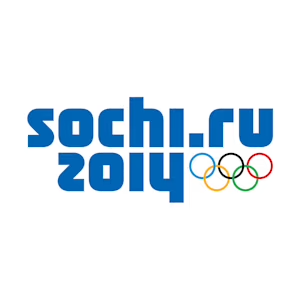
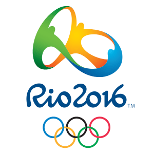

2014 Olympics
The 2014 Winter Olympics were held in Sochi, Russia from Febraury 6th to 23rd. This was the first time the winter Olympics were held in Russia. Around 2,800 athletes from 88 countries attended. There were 98 events across (FILL THIS IN) sports. The events of women's ski jumping and slopestyle debuted at this Olympics.
2016 Olympics
The 2016 Summer Olympics were held in Rio de Janerio, Brazil from August 5th to 21st. This was the first time the Olympics were held in South America. Over 11,000 athletes from 207 teams attended. There were 306 events across 42 sports. Golf and rugby sevens debuted at this Olympics.
Our Findings
Our research found the the nubmer of medals won by a country at the Olympics cannot be easily predicted by the country's population, GDP, or geographic location. All of the factors we looked at presented a moderate to no relationship with number of medals won. However, there are some interesting trends. For the 2014 Winter Olympics, countries that were more northern and had higher GDP tended to win more medals. At the 2016 Summer Olympics, countries that were politically powerful and had higher GDP tended to win more medals. Population did not appear to had a consistent trend with the number of medals won by a country.